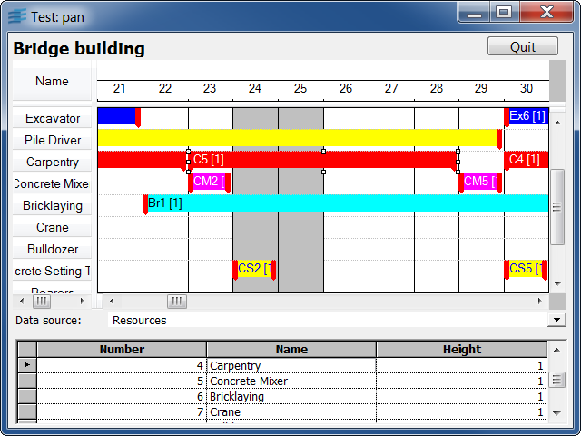

dbganttThis sample shows how to use an IliDbGantt.
This sample is written in Rogue Wave Script. It shows how to use the IliDbGantt isActivePeriod callback.
To refresh the Gantt chart, click within it and then press F9 key.
The Combo Box lets you choose which datasource is displayed in the Table Gadget. You can change, add and delete data in the Table Gadget and see the changes in the Gantt chart and/or move constraints in the Gantt chart and see the changes in the data sources (via the Table Gadget).